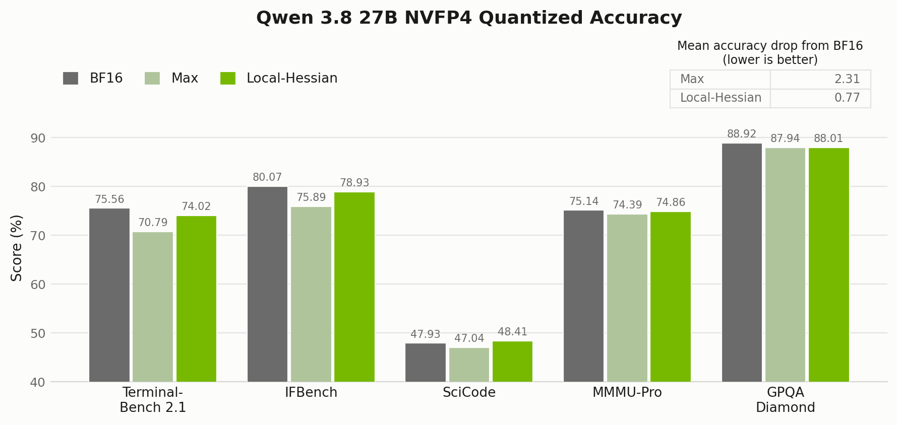
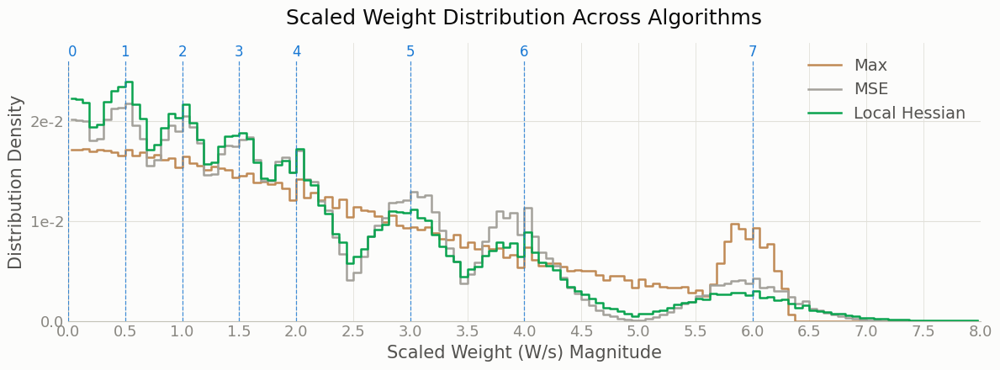

Improving NVFP4 Accuracy with Local-Hessian Weight Scales#
- Author:
Model Optimizer Team
- Date:
September 9, 2026
- Tags:
local-hessian, quantization, nvfp4, calibration, modelopt
In this blog, we share about Model Optimizer ‘Local-Hessian’, an algorithm for NVFP4 per-block scale selection to minimize the output error. We used this algorithm to create a low loss checkpoint nvidia/Qwen3.8-27B-NVFP4 which can leverage NVFP4 tensor cores for performant inference on Blackwell GPUs. Here is a comparison of accuracy results we observed for ‘Local-Hessian’ algorithm compared to the default max algorithm:
{kind=link}

Figure 1. Qwen3.8-27B NVFP4 accuracy comparison between the default NVFP4 algorithm (max) and ‘Local-Hessian’.
Scale Selection For NVFP4#
NVFP4 represents each group of 16 weights with FP4 values and an FP8 block scale [1]. This block scale is used to scale the per-block values so to NVFP4 E2M1 range (-6.0, 6.0). The default way is to set the block scale based on the per-block maximum value (max scaling) [1].
As originally shown in the ‘Four-Over-Six’ paper [2], this block scale can be selected based on other
criteria such as per-block error. ‘Four-Over-Six’ selects the per-block scale from 2 candidates, while the
Model-Optimizer Mean Square Error (MSE) algorithm uses an exhaustive sweep over all positive, non-zero FP8
scales (126 values).
Both of these approaches for scale selection consider only weight tensor-level error, which we find does not correlate well with downstream accuracy evaluation results.
How Local-Hessian Works#
NVFP4 Local-Hessian chooses each per-block weight scale to minimize the output error of the matrix multiplication rather than the weight error. Nothing about the format changes – we just compute the per-block scales differently from max scaling.
Consider a linear layer \(Y=WX\) with weights \(W\in\mathbb{R}^{C_{\mathrm{out}}\times C_{\mathrm{in}}}\) and calibration inputs \(X\in\mathbb{R}^{C_{\mathrm{in}}\times N}\), where \(N\) is the number of calibration tokens. Quantizing divides the weights by a scale and casts, where the cast rounds each value onto the grid of the low-precision format:
This leaves a quantization error
What we actually care about is the error this puts on the layer output, measured over the calibration set:
The input second-moment matrix \(XX^{\top}\in\mathbb{R}^{C_{\mathrm{in}}\times C_{\mathrm{in}}}\) is half the Hessian of the output error, \(\partial^2E(s)/\partial\Delta(W,s)^2=2XX^{\top}\): it weights each weight error by how much that input coordinate actually moves the output. The trace operator \(\operatorname{tr}(\cdot)\) sums one quadratic-error term per output channel, allowing the channels to be optimized independently.
For NVFP4, \(s\) is not a scalar: each output channel has \(C_{\mathrm{in}}/16\) blocks, one scale each. With \(M\) candidates per block, minimizing \(E(s)\) jointly means searching \(M^{C_{\mathrm{in}}/16}\) combinations – this is not tractable. To make the search tractable, Local-Hessian uses a block-diagonal approximation: it adds the output error from each block independently and ignores interactions between quantization errors in different blocks. For block \(b\),
where \(W_b\in\mathbb{R}^{1\times16}\) is one NVFP4 block of weights,
\(s_b\) is that block’s scale, and
\(X_b\in\mathbb{R}^{16\times N}\) holds the rows of \(X\) the
block multiplies, so the local Hessian \(X_bX_b^{\top}\) is only
\(16\times16\). We sweep all 126 candidate FP8 scales per block, just
as the MSE algorithm does; because blocks are independent, a
Triton kernel
does the whole layer at once. See the
Model Optimizer Local-Hessian code
for details.
Local-Hessian Results#
Accuracy Comparison#
In Table 1 we compare Local-Hessian against other scale-selection algorithms for weights on Qwen3.5-9B.
Local-Hessian gives the overall best accuracy among the NVFP4 weight-scale selection methods, cutting the average drop from 5.10 to 3.10 points against the default max rule. We get that from nothing but a smarter way of computing the weight scale – which says something about micro-block formats like NVFP4: the scale carries a lot of information, and it pays to set it diligently.
Weight scale selection method |
MMLU |
HellaSwag |
WinoGrande |
GSM8K |
Average drop (lower is better) |
WikiText PPL (lower is better) |
|---|---|---|---|---|---|---|
BF16 reference |
78.69 |
78.04 |
73.40 |
87.64 |
0.00 |
9.20 |
Max scale |
75.81 |
76.33 |
70.64 |
74.60 |
5.10 |
10.08 |
MSE scale |
76.49 |
76.61 |
72.45 |
76.72 |
3.87 |
9.98 |
Four-over-six scale |
75.32 |
76.62 |
70.40 |
76.42 |
4.75 |
10.02 |
Local-Hessian scale |
76.81 |
76.50 |
71.19 |
80.89 |
3.10 |
9.90 |
Table 1: Scale selection algorithm comparison. All layers except the final
output layer (lm_head) use NVFP4 weight and activation quantization (W4A4).
Local-Hessian With GPTQ#
Local-Hessian changes scales; GPTQ [3] changes weight rounding to minimize per-layer output error. The two are orthogonal, so they compose: Local-Hessian rounds to nearest (RTN) by default, and GPTQ can replace that rounding step once the scales are set. In Table 2, we show that Local-Hessian scales improve GPTQ as well.
Two things stand out:
Local-Hessian scale selection alone (3.10 average drop) beats GPTQ with max scales (4.84).
Combining Local-Hessian scales with GPTQ improves the average drop further, from 3.10 to 2.94.
Method |
MMLU |
HellaSwag |
WinoGrande |
GSM8K |
Average drop |
WikiText PPL |
|---|---|---|---|---|---|---|
Max scale + GPTQ |
75.77 |
76.51 |
70.17 |
75.97 |
4.84 |
10.02 |
Local-Hessian scale + GPTQ |
76.98 |
76.59 |
70.96 |
81.50 |
2.94 |
9.91 |
Table 2: GPTQ composition on Qwen3.5-9B, NVFP4 W4A4.
Note
Composition is not always a win: on Qwen3.8-27B, Local-Hessian + GPTQ scored below Local-Hessian alone, so the published checkpoint uses Local-Hessian only. This shows the best algorithm could vary depending on the model.
Scale Selection Reshapes Distribution#
Figure 2 plots the scaled weights \(W/s\) – the values handed to the E2M1 cast. Max scaling piles the mass up near 6.0, the largest E2M1 value, while MSE and Local-Hessian both cluster it on the representable E2M1 grid values. Grid alignment alone does not explain the accuracy gains. Although MSE and Local-Hessian both align weights to the E2M1 grid, Local-Hessian’s layer-output-error objective yields larger downstream accuracy improvements in our results.
{kind=link}

Figure 2. Scaled weight distribution across algorithms. Blue dashed lines are the NVFP4 E2M1 representable values. Distribution is for the first gate-projection layer of Qwen3.8-27B.
Just Better Scales, No Runtime Cost#
Local-Hessian and the other ModelOpt scale-selection algorithms for NVFP4 weight scales are free. Weight scales are computed only once, at checkpoint creation, and that same scale is reused on every deployment. Selecting scales this way improves accuracy without incurring any deployment throughput penalty.
Using Local-Hessian#
See the
local_hessian_calibrate API
for the calibration entry point.
To use it in your own configuration, set the algorithm field:
import modelopt.torch.quantization as mtq
config = {
"quant_cfg": [...], # quantizer configuration
"algorithm": {
"method": "local_hessian",
"layerwise": {"enable": True},
},
}
model = mtq.quantize(model, config, forward_loop)
See Quantization Configuration (quant_cfg) for how to write the quant_cfg field.
To reproduce the published Qwen3.8-27B checkpoint end to end:
python examples/hf_ptq/hf_ptq.py \
--pyt_ckpt_path Qwen/Qwen3.8-27B \
--recipe modelopt_recipes/models/Qwen/Qwen3.8-27B/ptq/nvfp4_w4a4_mlp_fp8_attn_local_hessian.yaml \
--dataset nemotron-post-training-v3 \
--calib_size 512 \
--calib_seq 2048 \
--batch_size 1 \
--export_path <export_dir>
Note
For Local-Hessian and GPTQ, we recommend enabling
layerwise_calibrate
with "layerwise": {"enable": True} and using calibration batch size 1.
Layerwise calibration exposes each layer to the fake-quantized outputs of the
preceding layer, approximating quantized deployment, while batch size 1 prevents
padding tokens from contaminating activation statistics.
Next steps#
Adapt Local-Hessian for sparse MoEs. Many experts in a sparse MoE see very little calibration data. Local-Hessian workflow needs to be adapted to that low-data regime.